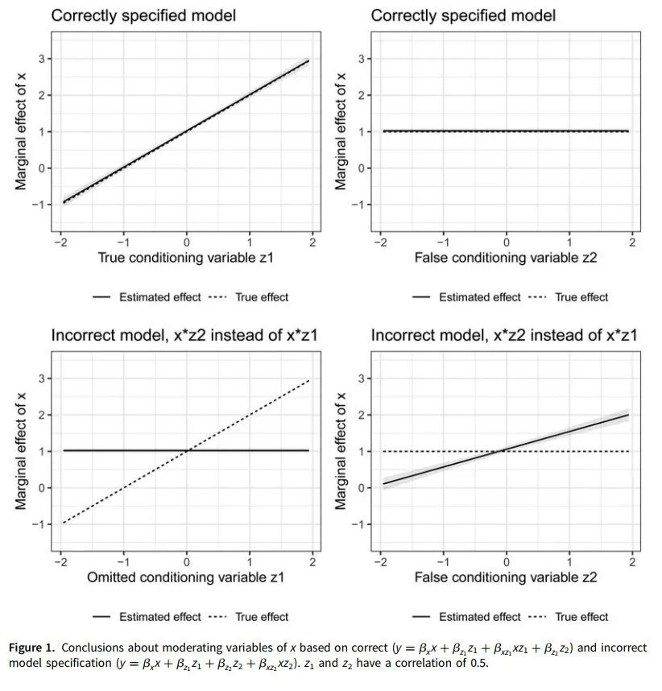
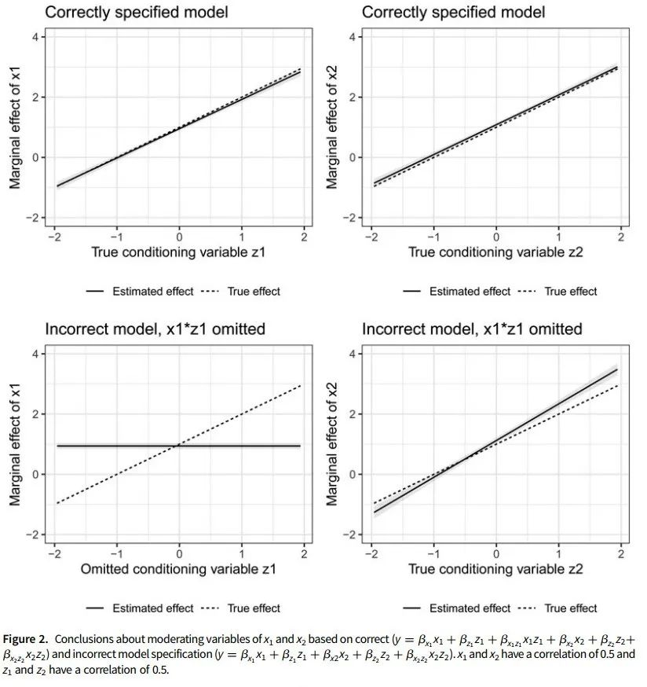

方法论衡 | Beiser-McGrath等：小心，你的交互项模型可能是错的！
原创 政文观止
政文观止Poliview
微信号 zhengwenguanzhi
功能介绍 从一群年轻人的视角出发，专业、专注、专解海内外比较政治经济研究的前沿佳作。
__发表于
方法论衡 4个
文献来源： Janina Beiser-McGrath and Liam F. Beiser-McGrath. (2020). Problems with products? Control strategies for models with interaction and quadratic effects, Political Science Research and Methods , 8:707–730.
作者简介： Janina Beiser-McGrath，康斯坦兹大学政治学与公共行政系博士后研究员；Liam F. Beiser- McGrath，康斯坦兹大学政治学与公共行政系高级研究员，英国皇家霍洛威学院政治学讲师。
引言
对于具有一定基础的定量研究者来说，交互效应是一个比较进阶的方法。交互效应的另一种数学上等价的表达叫调节效应，不过二者在理论上是有差异的（见方法论衡 | Keele & Stevenson：交互与因果：相同模型的不同概念）。本文发现，既有的包含交互效应的文献很少对交互效应模型进行适当的模型诊断。这些研究都基于这样一种假设，即潜在混杂因子对交互项（包括二次项）中乘积因子的影响是线性的，故而他们采取删除乘积因子模型来进行模型比较的策略，但是这种控制策略并不能避免由交互项带来的估计偏差。因此，本文对既有的控制策略进行了分析，并提出一些新的解决方案以提升估计的效度。
常用控制策略的问题
在此首先简单介绍一下交互效应（调节效应）。在线性回归（特别是分层线性模型）中，由于情境（context）因素，同一原因在不同环境下会产生不同的结果，对这种现象的建模可以考虑调节效应的影响。更一般地来说，随着某种条件的变化，某个因素对另一个因素的影响大小也在发生变化，这就是调节效应。而交互效应是指两种因素相互之间都有上述的影响，即调节效应是单向的，而交互效应是对称的。
如国家的经济不平等会提高内战爆发的可能性，而民主国家发生内战的可能性更小。因此，政体类型可能作为调节变量从而对经济不平等和内战爆发可能性的关系产生影响。有文献指出，国内生产总值（GDP）越高的国家，发生内战的可能性越低，而且GDP和民主与不平等也是相关的，因此GDP往往会被视作控制变量。但是也有文献指出GDP对经济不平等和内战爆发可能性二者关系的调节效应。在作者看来，如果GDP和民主存在相关关系，但模型没有控制GDP和经济不平等的交互项，那么对民主和经济不平等的交互项的协方差系数估计是有偏的，因为这一估计也包含了GDP和经济不平等交互项的影响。
此类错误有两种情况，其一，使用了错误的交互项，而必要的交互项却没有被纳入模型中（见图一）；其二，交互项缺失，造成交互项的估计在一定程度上有偏差（见图二）。

图一

图二
有人可能认为为了避免缺失，那就将所有可能的交互项全部放到模型中。但是这种操作方式非常不合理，因为这种操作不仅仅为模型增加了大量的额外项，而且也有研究表明这种操作并不能改善模型，甚至可能会提高模型的估计偏差。因此，研究者需要选取适当的变量而忽略那些不相关的变量。作者建议采用三种带有惩罚的回归方法来解决这类问题：the adaptive Lasso, KRLS (Kernel Regularized Least Squares), and BART (Bayesian Additive Regression Trees)。
The adaptive Lasso方法的优势在于，随着样本容量的增加，无关变量的估计系数会依概率收敛至0，因此当模型中增加冗余变量时，在大样本估计中，这些冗余变量的影响会被控制（也即所谓惩罚），减少估计的偏差。这一方法非常适用于二值响应变量的模型（即logit/probit簇模型）。而KRLS和前者一样设定了惩罚项，这一方法的优势在于它假定一个非线性函数的参数模型，并且以正态核函数为基础来定义候选的函数形式，因此可以估计响应变量服从各种分布的模型。BART最常用的领域是分析处理效应的异质性。此模型包括多个聚类树，对多种交互效应进行估计，并通过加权的方法来控制过度拟合的情况。
当然，这些模型也有自己的缺陷。模型是对世界的简单表达，因此需要平衡模型的偏差和有效性，而这是一个永恒的话题。the adaptive Lasso方法的惩罚机制过于严格，导致模型的有偏估计，而KRLS对数据的分布假定比较模糊。在本文看来，相比较而言the adaptive Lasso方法更为有效，而且也有针对除二值响应变量之外的因变量而发展出的其他Lasso模型，故而适用范围也更广。
数据测试与结果总结
本文建立了一个虚拟数据集，考察在不同条件和不同样本容量的情况下几种模型设定方法在回归系数估计上的效果（具体的数据设定参见原文）。总的来说，在“低信息量”的情境下，也即样本量较少且回归因子(regressors)之间存在较高的相关性时，BART方法表现的非常保守，而另外两种方法的估计也相对比较保守，但是点估计上更接近真实值。而在样本量较大的情况下，adaptive Lasso估计的表现要更好，尽管三种方法的差异并不是十分明显。
在多数情况下，模型总是会低估交互项以及非线性关系的协方差系数，但是相比于仅仅删除乘积项而言，这种偏误所带来的风险更低。故而应该通过这些方法对模型进行稳健性检验。
结论
模型设定也是一门非常复杂的技术，而对交互项的理解的缺失也会在不同程度上影响到模型设定的正确性。例如，一个完整的交互项设计是把交互项和交互项的乘积因子都放入模型中，去分别看乘积因子和交互项的回归系数（也就是主效应和交互效应）。但是更为准确的做法是，我们需要依据我们的理论去设定模型，如果在理论上找不到某个乘积因子和结果变量之间的关系，那么完整的交互项模型则存在一定的偏差。
本文在方法上的一个贡献在于它给予研究者一个通过检测的稳健性检验方法，让研究者在相关的模型设定和估计上对自己的研究更有信心，也避免了因理论的不完善等因素而造成由模型设定引起的估计偏误。但是这一方法依旧存在它的局限性，作者并未指出的是，在一些更为复杂的模型，例如分层线性模型的跨层交互效应，或者其他广义线性模型的交互效应估计上，相关方法是否还能够保持同样的估计有效性。同时，从本质上看，文章的图表中所反映出的不同方法之间并不存在显著的区别（即估计的置信区间存在大范围的重叠），因而作者得出不同方法的优劣性时是存在迟疑的。当然，在实际研究中，我们并不知道真实值是什么（否则也没必要进行统计推断了），因此是否因为更为保守的方法不容易带给我们统计意义上显著的估计量而我们就放弃呢，显然这种做法不利于对真实世界的探索。
总体而言，忽略那些特别复杂的技术细节，对于想要使用相关方法的研究者来说，可以利用这些方法进行参考，毕竟本文并没有对不同方法之间的优度设计更为量化细致的指标进行比较。
编译：刘天祥 审校：杨端程 编辑：康张城
【政文观止Poliview】系头条号签约作者